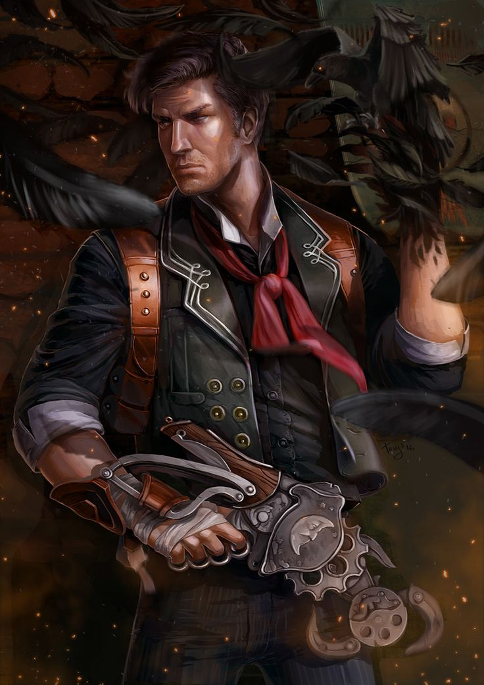

A história de BioShock decorre em 1960, no qual o jogador controla Jack, depois do seu avião cair no oceano, junto a um terminal batisférico que leva à cidade subaquática de Rapture.
Construída pelo magnata Andrew Ryan, a cidade tinha como objectivo inicial ser uma utopia isolada, mas a descoberta do ADAM, um plasmídeo que dá poderes sobre-humanos, fez com que a cidade entrasse em declínio turbulento.
ack tenta encontrar uma maneira de escapar, lutando contra enormes quantidades de inimigos obcecados por ADAM, como os mortíferos Big Daddies, enquanto também se encontra com alguns humanos sãos e através deles acaba eventualmente por aprender mais sobre o passado de Rapture.
O jogador, como Jack, consegue derrotar os inimigos com o uso de várias armas, utilizando plasmídeos que lhe dão poderes únicos ou fazendo com que as próprias defesas da cidade se virem contra os seus habitantes.
O jogo inclui elementos de survival horror (horror de sobrevivência) e de jogos em role-playing (RPG), dando ao jogador diferentes opções ao confrontar-se com inimigos como disfarçar-se, bem como escolhas morais entre matar ou salvar personagens.
